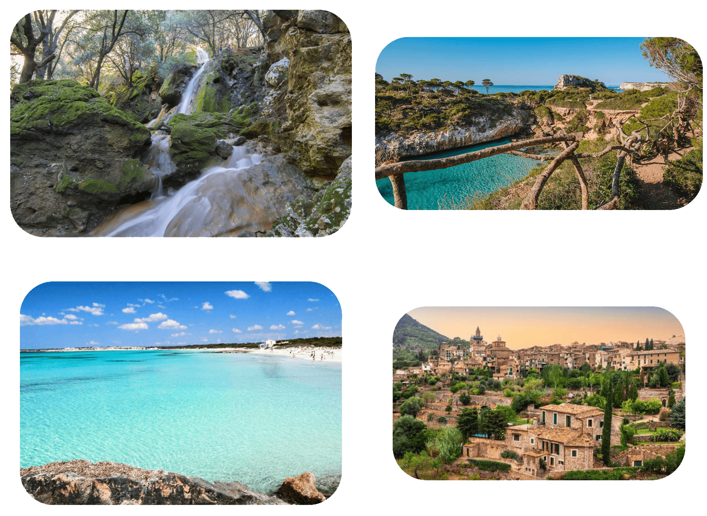
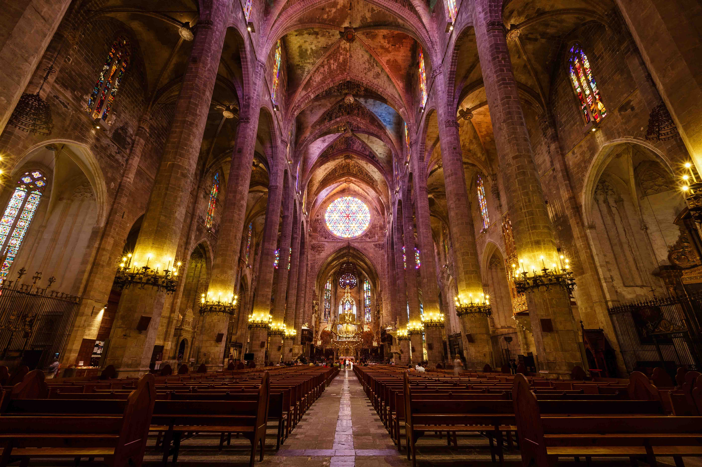
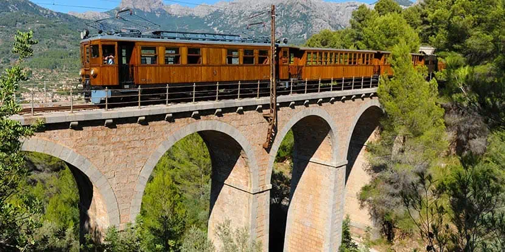

Viajes top destinos del mundo
Ver más

Mallorca es una isla española situada en la parte central del archipiélago balear, en el mar Mediterráneo. Su capital, y también la de la comunidad autónoma de las Islas Baleares, es Palma de Mallorca. Mallorca, cuya denominación proviene del latín, insula maior (isla mayor), es la isla más grande del archipiélago balear y un destino turístico de renombre mundial gracias a su diversidad de paisajes, que combinan playas, calas, montañas y acantilados

La Catedral-Basílica de Santa María de Mallorca, conocida como La Seu, es un imponente templo de estilo gótico levantino, construido a orillas de la bahía de Palma a partir del siglo XIII. Destaca por su ubicación frente al mar, sus grandes dimensiones, el espectacular rosetón gótico y las intervenciones artísticas de Antoni Gaudí y Miquel Barceló

El Tren de Sóller es una histórica línea ferroviaria que se inauguró el 6 de abril de 1912, poniendo fin al aislamiento del valle de Sóller. El tren, con sus vagones de madera, ofrece una experiencia de viaje donde el trayecto, de unos 26 km, pasa por paisajes espectaculares, incluyendo la Sierra de Tramuntana (Patrimonio de la Humanidad),transportando a los pasajeros a otra época.
¿Qué tal? Soy Nidia, 33 años, ibicenca de nacimiento pero habitante de Mallorca desde hace muchos años. Si buscáis mar y montaña, aventura y calma, ciudad y pueblo, está es vuestra isla. El paraíso te espera al otro lado del charco.
¿Te interesan otros destinos? Echa un ojo a estos: Gijón, Sevilla, Lucena